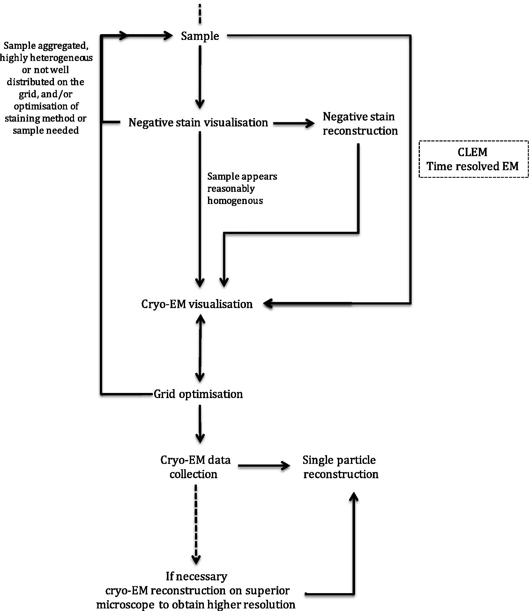

Overview¶
Note
Note: Taken from https://www.sciencedirect.com/science/article/pii/S1046202316300330 Review and Update
This is just a test to modify a file.
This is a link To somewhere
Transmission electron microscopy (EM) can be used to provide structural information on a range of biological specimens from cells to macromolecules. The resolution of the information that can be acquired using EM is dependent on the properties of the sample, the specimen preparation method used, the technical specification of the electron microscope, and imaging parameters. 3D information can be obtained from the 2D EM data collected in a variety of ways, including single particle analysis [1], [2], helical reconstruction [3], electron tomography (with or without subtomogram averaging) [4], [5], and 2D crystallography [6], [7]. These methods of data processing are suitable for different samples; single particle analysis for purified, ‘homogenous’ protein complexes (such as the ribosome [8]), helical reconstruction for protein assemblies with helical symmetry (such as microtubules [9]), tomography for ‘unique’ assemblies (such as organelles and cells [10]), and 2D crystallography for proteins, significantly smaller than 150 kDa that form ordered 2D arrays (such as bacteriorhodopsin [11]). Single particle analysis uses multiple, untilted 2D projection images that contain many ‘single particles’ with different angular orientations. The angular relationships between each view of the specimen can be calculated in the images to provide 3D information. Electron tomography and 2D crystallography obtain different angular views by tilting the same specimen many times (typically tilting the specimen between ±65° and taking an image every 2°, yielding 65 images of the same area). The angular relationship between each image is known, because the tilt increment is defined, and so this can be used to reconstruct 3D information. The generation of 3D structural information from 2D micrographs and electron diffraction patterns using the processing methods above has been reviewed extensively elsewhere [1], [2], [6], [7], [12].
Here, steps towards biological structure determination by EM are discussed with a focus on sample preparation and imaging of specimens for single particle analysis (example workflow shown in Fig. 1) and electron tomography, although many of the concepts and considerations discussed are transferrable.
